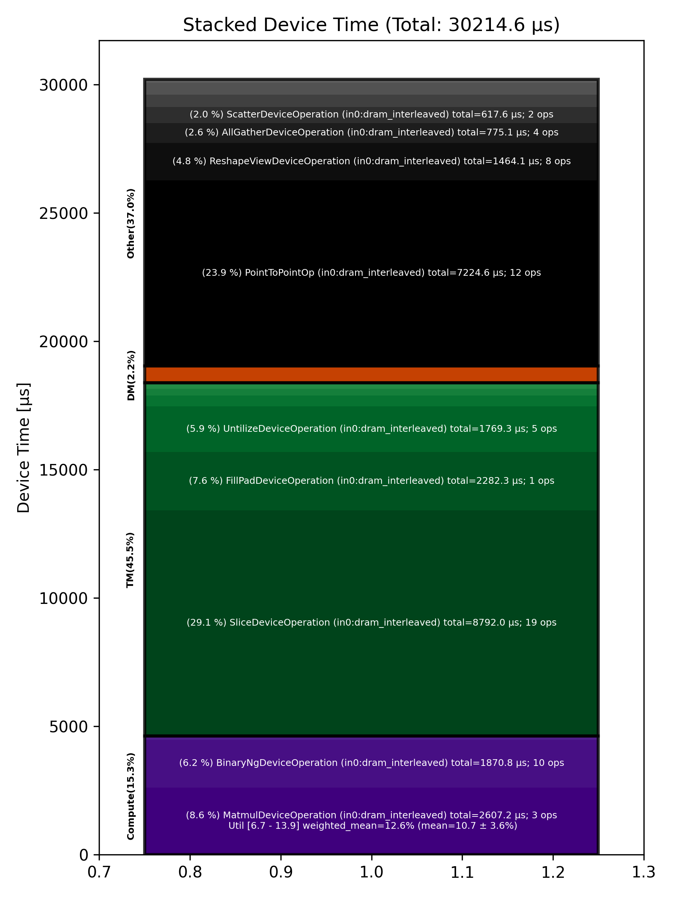

🚀 Performance Report 🚀 ======================== ID Total % Bound OP Code Device Device Time Op-to-Op Gap Cores DRAM DRAM % FLOPs FLOPs % Math Fidelity ----------------------------------------------------------------------------------------------------------------------------------------------------------------------------------- 23 0.2 % LayerNormDeviceOperation 14 112 μs 1 BF16, BF16 => BF16 52 0.3 % SliceDeviceOperation 22 2 μs 149 μs 23 BF16 => BF16 66 0.2 % UntilizeDeviceOperation 24 15 μs 101 μs 45 BF16 => BF16 116 0.3 % SliceDeviceOperation 22 2 μs 171 μs 32 BF16 => BF16 159 0.5 % TilizeWithValPaddingDeviceOperation 10 10 μs 266 μs 1 BF16 => BF16 164 0.4 % SliceDeviceOperation 26 2 μs 253 μs 23 BF16 => BF16 222 0.5 % UntilizeDeviceOperation 11 15 μs 272 μs 45 BF16 => BF16 235 0.6 % SliceDeviceOperation 29 2 μs 323 μs 32 BF16 => BF16 285 0.2 % TilizeWithValPaddingDeviceOperation 19 10 μs 85 μs 1 BF16 => BF16 303 0.3 % CopyDeviceOperation 6 2 μs 151 μs 23 BF16 => BF16 333 0.5 % CopyDeviceOperation 31 2 μs 290 μs 23 BF16 => BF16 358 0.4 % CopyDeviceOperation 3 2 μs 216 μs 23 BF16 => BF16 395 0.1 % CopyDeviceOperation 29 2 μs 78 μs 23 BF16 => BF16 436 0.9 % PointToPointOp 24 31 μs 524 μs 1 BF16, BF16 => BF16 494 13.5 % PointToPointOp 19 32 μs 7,944 μs 1 BF16, BF16 => BF16 496 0.3 % PointToPointOp 27 28 μs 148 μs 1 BF16, BF16 => BF16 548 1.4 % PointToPointOp 10 29 μs 782 μs 1 BF16, BF16 => BF16 598 1.1 % PointToPointOp 0 30 μs 642 μs 1 BF16, BF16 => BF16 602 1.3 % PointToPointOp 8 28 μs 736 μs 1 BF16, BF16 => BF16 636 20.9 % ConcatDeviceOperation 18 3 μs 12,340 μs 72 BF16, BF16 => BF16 666 0.3 % UntilizeWithUnpaddingDeviceOperation 16 28 μs 143 μs 4 BF16 => BF16 683 0.3 % RepeatDeviceOperation 29 58 μs 139 μs 72 BF16 => BF16 708 0.4 % TilizeWithValPaddingDeviceOperation 26 35 μs 208 μs 64 BF16 => BF16 763 3.8 % SLOW MatmulDeviceOperation b={16} x 128 x 736 x 5760 4 1,244 μs 971 μs 60 76 GB/s 26.4 % 14.0 TFLOPs 11.3 % HiFi2 BF16 x BFP8 => BF16 785 0.7 % ReduceScatterDeviceOperation 0 401 μs 1 μs 40 BF16 => BF16 817 0.7 % AllGatherDeviceOperation 0 395 μs 1 μs 40 BF16 => BF16 849 0.5 % BinaryNgDeviceOperation 4 301 μs 1 μs 72 BF16, BF16 => BF16 895 1.5 % UntilizeDeviceOperation 10 866 μs 1 μs 45 BF16 => BF16 906 7.3 % SliceDeviceOperation 28 4,317 μs 1 μs 72 BF16 => BF16 958 0.2 % TilizeDeviceOperation 11 134 μs 1 μs 64 BF16 => BF16 963 0.2 % UnaryNgDeviceOperation 25 124 μs 1 μs 72 BF16 => BF16 1020 0.2 % BinaryNgDeviceOperation 18 120 μs 1 μs 72 BF16, BF16 => BF16 1055 1.5 % UntilizeDeviceOperation 10 868 μs 1 μs 45 BF16 => BF16 1074 7.3 % SliceDeviceOperation 20 4,318 μs 1 μs 72 BF16 => BF16 1114 0.2 % TilizeDeviceOperation 16 133 μs 1 μs 64 BF16 => BF16 1135 0.2 % UnaryNgDeviceOperation 6 124 μs 1 μs 72 BF16 => BF16 1158 0.2 % BinaryNgDeviceOperation 3 131 μs 1 μs 72 BF16, BF16 => BF16 1217 0.4 % UnaryNgDeviceOperation 8 220 μs 1 μs 72 BF16 => BF16 1220 0.3 % BinaryNgDeviceOperation 26 166 μs 1 μs 72 BF16, BF16 => BF16 1273 0.3 % BinaryNgDeviceOperation 12 166 μs 1 μs 72 BF16, BF16 => BF16 1308 2.2 % SLOW MatmulDeviceOperation b={16} x 128 x 2880 x 736 16 1,321 μs 1 μs 23 37 GB/s 12.8 % 6.6 TFLOPs 13.9 % HiFi2 BF16 x BFP8 => BF16 1326 0.1 % BinaryNgDeviceOperation 7 44 μs 1 μs 72 BF16, BF16 => BF16 1360 2.2 % ReshapeViewDeviceOperation 5 1,274 μs 1 μs 72 BF16 => BF16 1385 0.0 % TypecastDeviceOperation 0 5 μs 1 μs 72 BF16 => FP32 1422 0.1 % SLOW MatmulDeviceOperation 32 x 2880 x 128 6 43 μs 1 μs 4 18 GB/s 6.1 % 0.6 TFLOPs 6.7 % HiFi2 FP32 x BFP8 => FP32 1470 0.0 % TypecastDeviceOperation 11 3 μs 1 μs 4 FP32 => BF16 1481 0.1 % TopKDeviceOperation 0 80 μs 2 μs 1 BF16 => BF16 1513 0.0 % SliceDeviceOperation 0 1 μs 2 μs 1 BF16 => BF16 1540 0.0 % SliceDeviceOperation 26 1 μs 2 μs 1 UINT16 => UINT16 1591 0.0 % TypecastDeviceOperation 14 2 μs 2 μs 1 UINT16 => FP32 1602 0.0 % ReshapeViewDeviceOperation 24 9 μs 1 μs 32 FP32 => FP32 1664 0.0 % TypecastDeviceOperation 9 4 μs 1 μs 32 FP32 => INT32 1678 0.0 % UntilizeWithUnpaddingDeviceOperation 7 5 μs 1 μs 32 INT32 => INT32 1718 0.0 % UntilizeWithUnpaddingDeviceOperation 15 5 μs 1 μs 32 INT32 => INT32 1759 0.0 % PermuteDeviceOperation 10 4 μs 1 μs 32 INT32 => INT32 1763 0.0 % PermuteDeviceOperation 25 4 μs 1 μs 32 INT32 => INT32 1795 0.0 % ConcatDeviceOperation 25 3 μs 1 μs 64 INT32, INT32 => INT32 1843 0.0 % PermuteDeviceOperation 21 4 μs 1 μs 32 INT32 => INT32 1875 0.0 % TilizeWithValPaddingDeviceOperation 21 9 μs 1 μs 32 INT32 => INT32 1905 0.0 % SoftmaxDeviceOperation 4 25 μs 1 μs 72 BF16 => BF16 1937 0.1 % AllGatherDeviceOperation 0 83 μs 1 μs 24 INT32 => INT32 1969 0.0 % AllGatherDeviceOperation 0 11 μs 1 μs 8 BF16 => BF16 1988 0.0 % ReshapeViewDeviceOperation 26 12 μs 1 μs 16 INT32 => INT32 2038 0.0 % SliceDeviceOperation 15 3 μs 1 μs 16 INT32 => INT32 2078 0.0 % UntilizeWithUnpaddingDeviceOperation 11 15 μs 1 μs 16 INT32 => INT32 2097 0.0 % SliceDeviceOperation 4 8 μs 1 μs 72 INT32 => INT32 2141 0.0 % TilizeWithValPaddingDeviceOperation 19 9 μs 1 μs 16 INT32 => INT32 2166 0.0 % BinaryNgDeviceOperation 15 12 μs 1 μs 72 INT32, INT32 => INT32 2193 0.0 % BinaryNgDeviceOperation 4 5 μs 1 μs 72 INT32, INT32 => INT32 2240 0.0 % ReshapeViewDeviceOperation 9 7 μs 1 μs 16 INT32 => INT32 2264 0.0 % ReshapeViewDeviceOperation 13 5 μs 1 μs 16 BF16 => BF16 2278 0.0 % UntilizeWithUnpaddingDeviceOperation 3 12 μs 2 μs 1 INT32 => INT32 2309 0.0 % SliceDeviceOperation 27 1 μs 3 μs 1 INT32 => INT32 2365 0.1 % TilizeWithValPaddingDeviceOperation 19 44 μs 2 μs 1 INT32 => INT32 2378 0.0 % UntilizeWithUnpaddingDeviceOperation 28 10 μs 2 μs 1 BF16 => BF16 2425 0.0 % SliceDeviceOperation 12 1 μs 3 μs 1 BF16 => BF16 2447 0.0 % TilizeWithValPaddingDeviceOperation 6 23 μs 2 μs 1 BF16 => BF16 2487 0.0 % UntilizeWithUnpaddingDeviceOperation 14 7 μs 2 μs 1 INT32 => INT32 2499 0.0 % UntilizeWithUnpaddingDeviceOperation 25 6 μs 2 μs 1 BF16 => BF16 2552 0.5 % ScatterDeviceOperation 13 309 μs 3 μs 1 BF16, INT32 => BF16 2590 0.0 % UntilizeWithUnpaddingDeviceOperation 11 12 μs 2 μs 1 INT32 => INT32 2623 0.0 % SliceDeviceOperation 10 1 μs 3 μs 1 INT32 => INT32 2653 0.1 % TilizeWithValPaddingDeviceOperation 19 44 μs 2 μs 1 INT32 => INT32 2683 0.0 % UntilizeWithUnpaddingDeviceOperation 17 10 μs 2 μs 1 BF16 => BF16 2692 0.0 % SliceDeviceOperation 26 1 μs 3 μs 1 BF16 => BF16 2748 0.0 % TilizeWithValPaddingDeviceOperation 18 23 μs 2 μs 1 BF16 => BF16 2770 0.0 % UntilizeWithUnpaddingDeviceOperation 20 7 μs 2 μs 1 INT32 => INT32 2813 0.0 % UntilizeWithUnpaddingDeviceOperation 19 6 μs 2 μs 1 BF16 => BF16 2847 0.5 % ScatterDeviceOperation 10 309 μs 3 μs 1 BF16, INT32 => BF16 2858 0.1 % TilizeWithValPaddingDeviceOperation 28 32 μs 1 μs 64 BF16 => BF16 2892 0.0 % ReshapeViewDeviceOperation 30 25 μs 1 μs 16 BF16 => BF16 2919 0.0 % UntilizeDeviceOperation 2 5 μs 1 μs 4 BF16 => BF16 2950 0.8 % MeshPartitionDeviceOperation 14 2 μs 451 μs 72 BF16 => BF16 2999 0.3 % TilizeWithValPaddingDeviceOperation 14 4 μs 181 μs 4 BF16 => BF16 3027 0.3 % TransposeDeviceOperation 21 2 μs 161 μs 72 BF16 => BF16 3051 0.6 % ReshapeViewDeviceOperation 29 77 μs 265 μs 72 BF16 => BF16 3094 1.9 % BinaryNgDeviceOperation 15 920 μs 197 μs 72 BF16, BF16 => BF16 3112 3.9 % FillPadDeviceOperation 1 2,282 μs 1 μs 72 BF16 => BF16 3157 0.8 % FastReduceNCDeviceOperation 23 483 μs 1 μs 72 BF16 => BF16 3184 0.1 % SliceDeviceOperation 5 64 μs 1 μs 72 BF16 => BF16 3217 0.3 % ReduceScatterDeviceOperation 0 190 μs 1 μs 24 BF16 => BF16 3249 0.5 % AllGatherDeviceOperation 0 285 μs 1 μs 40 BF16 => BF16 3288 0.0 % SliceDeviceOperation 13 16 μs 1 μs 72 BF16 => BF16 3307 0.0 % SliceDeviceOperation 29 16 μs 1 μs 72 BF16 => BF16 3340 0.0 % SliceDeviceOperation 30 17 μs 1 μs 72 BF16 => BF16 3382 0.0 % SliceDeviceOperation 15 17 μs 1 μs 72 BF16 => BF16 3418 0.0 % CopyDeviceOperation 16 17 μs 1 μs 72 BF16 => BF16 3453 0.0 % CopyDeviceOperation 19 17 μs 1 μs 72 BF16 => BF16 3468 0.0 % CopyDeviceOperation 30 17 μs 1 μs 72 BF16 => BF16 3498 0.0 % CopyDeviceOperation 28 17 μs 1 μs 72 BF16 => BF16 3526 2.4 % PointToPointOp 16 1,277 μs 149 μs 1 BF16, BF16 => BF16 3528 1.2 % PointToPointOp 24 723 μs 3 μs 1 BF16, BF16 => BF16 3532 1.8 % PointToPointOp 16 1,083 μs 5 μs 1 BF16, BF16 => BF16 3610 1.8 % PointToPointOp 19 1,079 μs 5 μs 1 BF16, BF16 => BF16 3616 3.1 % PointToPointOp 23 1,799 μs 5 μs 1 BF16, BF16 => BF16 3632 1.8 % PointToPointOp 7 1,085 μs 4 μs 1 BF16, BF16 => BF16 3737 0.0 % UntilizeWithUnpaddingDeviceOperation 12 16 μs 1 μs 32 BF16 => BF16 3761 0.0 % UntilizeWithUnpaddingDeviceOperation 4 17 μs 1 μs 32 BF16 => BF16 3785 0.0 % UntilizeWithUnpaddingDeviceOperation 0 17 μs 1 μs 32 BF16 => BF16 3825 0.0 % UntilizeWithUnpaddingDeviceOperation 4 17 μs 1 μs 32 BF16 => BF16 3865 0.0 % ConcatDeviceOperation 12 4 μs 1 μs 32 BF16, BF16 => BF16 3901 0.5 % TilizeWithValPaddingDeviceOperation 19 182 μs 101 μs 45 BF16 => BF16 3913 0.1 % ReshapeViewDeviceOperation 0 55 μs 1 μs 72 BF16 => BF16 3946 0.4 % BinaryNgDeviceOperation 28 5 μs 213 μs 72 BF16, BF16 => BF16 ----------------------------------------------------------------------------------------------------------------------------------------------------------------------------------- 100.0 % 124 device ops, 0 host ops, 0 signposts 30,215 μs 28,762 μs 📊 Stacked report 📊 ==================== Total % Op Code Device Time Sum Op Count Op Category Min FLOPs Max FLOPs Mean FLOPs Std FLOPs Weighted Mean FLOPs ------------------------------------------------------------------------------------------------------------------------------------------------------------------------------ 29.10 % SliceDeviceOperation (in0:dram_interleaved) 8,792.03 μs 19 TM 23.91 % PointToPointOp (in0:dram_interleaved) 7,224.59 μs 12 Other 8.63 % MatmulDeviceOperation (in0:dram_interleaved) 2,607.21 μs 3 Compute 6.73 % 13.90 % 10.65 % 3.63 % 12.55 % 7.55 % FillPadDeviceOperation (in0:dram_interleaved) 2,282.28 μs 1 TM 6.19 % BinaryNgDeviceOperation (in0:dram_interleaved) 1,870.77 μs 10 Compute 5.86 % UntilizeDeviceOperation (in0:dram_interleaved) 1,769.34 μs 5 TM 4.85 % ReshapeViewDeviceOperation (in0:dram_interleaved) 1,464.07 μs 8 Other 2.57 % AllGatherDeviceOperation (in0:dram_interleaved) 775.06 μs 4 Other 2.04 % ScatterDeviceOperation (in0:dram_interleaved) 617.61 μs 2 Other 1.96 % ReduceScatterDeviceOperation (in0:dram_interleaved) 591.19 μs 2 DM 1.60 % FastReduceNCDeviceOperation (in0:dram_interleaved) 483.06 μs 1 Other 1.55 % UnaryNgDeviceOperation (in0:dram_interleaved) 467.76 μs 3 Other 1.41 % TilizeWithValPaddingDeviceOperation (in0:dram_interleaved) 426.06 μs 12 TM 0.88 % TilizeDeviceOperation (in0:dram_interleaved) 267.05 μs 2 TM 0.62 % UntilizeWithUnpaddingDeviceOperation (in0:dram_interleaved) 186.96 μs 16 TM 0.37 % LayerNormDeviceOperation (in0:dram_interleaved) 112.20 μs 1 Compute 0.26 % TopKDeviceOperation (in0:dram_interleaved) 79.73 μs 1 Other 0.25 % CopyDeviceOperation (in0:dram_interleaved) 74.61 μs 8 DM 0.19 % RepeatDeviceOperation (in0:dram_interleaved) 58.36 μs 1 Other 0.08 % SoftmaxDeviceOperation (in0:dram_interleaved) 24.71 μs 1 Compute 0.05 % TypecastDeviceOperation (in0:dram_interleaved) 13.88 μs 4 TM 0.04 % PermuteDeviceOperation (in0:dram_interleaved) 12.34 μs 3 TM 0.03 % ConcatDeviceOperation (in0:dram_interleaved) 10.05 μs 3 TM 0.01 % TransposeDeviceOperation (in0:dram_interleaved) 2.13 μs 1 TM 0.01 % MeshPartitionDeviceOperation (in0:dram_interleaved) 1.56 μs 1 Other ------------------------------------------------------------------------------------------------------------------------------------------------------------------------------
